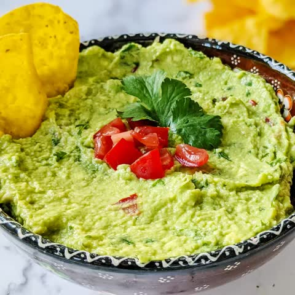

GuAcamole

Description
Guacamole is an avocado-based dip or spread that originated in Mexico.
It's typically made with mashed avocado and lime juice, then seasoned with salt and cilantro.
Guacamole often contains tomatoes and onions.
Ingredients
-
3 avocados, peeled, pitted, and mashed
-
1 lime, juiced
-
1 teaspoon salt
-
2 roma tomatoes, diced
-
1/2 cup diced onion
-
3 tablespoons chopped fresh cilantro
-
1 teaspoon minced garlic
-
1 pinch ground cayenne pepper
Steps
-
Mash avocados, lime juice, and salt together in a medium bowl;
mix in tomatoes, onion, cilantro, and garlic.
Stir in cayenne pepper.
Go to main page